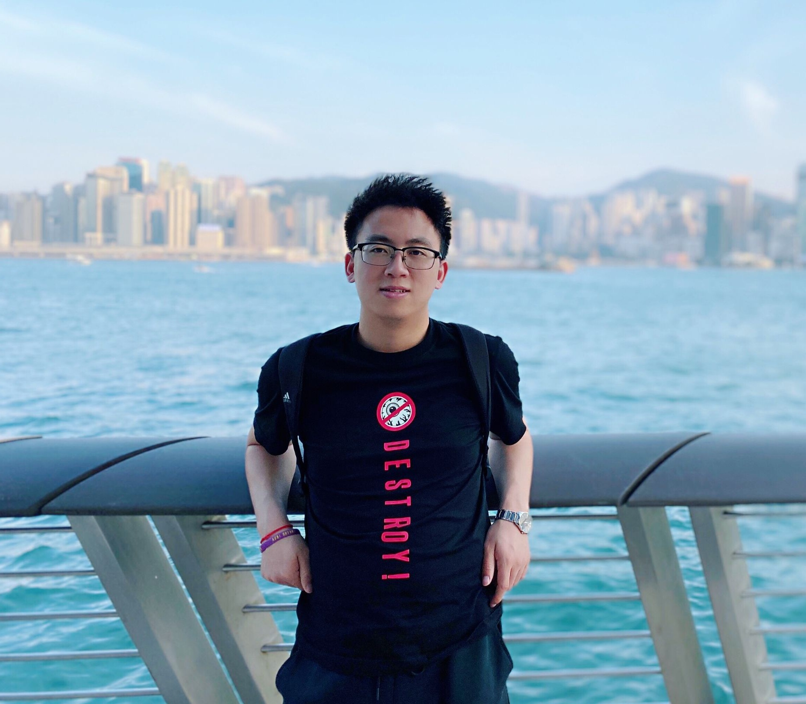

Jia-Chen Gu (顾佳宸)
Postdoctoral Researcher
Department of Computer Science
University of California, Los Angeles


About Me
I am currently a Postdoctoral Researcher at University of California, Los Angeles (UCLA), advised by Prof. Nanyun (Violet) Peng and Prof. Kai-Wei Chang. I received my Ph.D. degree from the University of Science and Technology of China (USTC) in 2022, advised by Prof. Zhen-Hua Ling. I have previously interned at Microsoft. I fortunately received the Best Paper Honorable Mention Award of ACL 2023 and Best Paper Award of DialDoc@ACL 2022.
My primary research interests lie within machine learning for natural language processing, particularly the techniques that can potentially build Robust, Efficient, and Trustworthy AI. A list of topics that I am actively working on:
- Retrieval-Augmented Language Models to augment the capabilities of large language models (LLMs) via retrieval from external datastore. Recent work: [CRAG], [Self-Routing RAG], [BRIEF-Pro], [BRIEF], [TemMed-Bench], [MRAG-Bench], [Sparse-RAG], [SyncCheck], [TEGTOK], [SPD], [Partner Knowledge], [FIRE], [DIM].
- Model Editing to reduce the cost of LLM continual learning by enabling data-efficient alterations to LLM behavior. Recent work: [SPHERE], [PRUNE], [RECT], [PEAK], [Reversal Editing], [TangleScore], [MOSE], [EditAttack], [UltraEdit], [CaKE], [KnowEdit].
- Representation Learning with Weak Supervision in the context of dialogue systems: [MADNet], [GIFT], [HeterMPC], [MPC Survey], [MPC-BERT], [SA-BERT], [U2U-IMN], [IMN].
If you are interested in talking about research and life with me, please feel free to reach out.
News
- Upcoming Travel: TBD
Experience & Education
- 2023 - Present: Postdoctoral Researcher at UCLA, advised by Prof. Nanyun (Violet) Peng and Prof. Kai-Wei Chang.
- 2022 - 2023: Postdoctoral Researcher at USTC, advised by Prof. Zhen-Hua Ling.
- 2020 - 2021: Research Intern at Microsoft, hosted by Dr. Chongyang Tao and Dr. Daxin Jiang.
- 2019 - 2020: Visiting Student at Queen's University, hosted by Prof. Xiaodan Zhu.
- 2017 - 2022: Ph.D. Degree at USTC, advised by Prof. Zhen-Hua Ling.
- 2013 - 2017: B.E. Degree at Hohai University.
Selected Honors
- 2025 Chancellor’s Award for Postdoctoral Research Nomination Award, UCLA
- 2023 Best Paper Honorable Mention Award, ACL
- 2022 Best Paper Award, DialDoc@ACL
- 2022 Outstanding Doctoral Dissertation Nomination Award, Chinese Information Processing Society of China
- 2022 Presidential Scholarship, Chinese Academy of Sciences (Top 1%)
- 2022 Outstanding Graduate Award, USTC
- 2021 China National Scholarship, Ministry of Education
- 2021 Huayu Scholarship, NERC-SLIP (Top 2 graduates)
- 2015 Presidential Yan Kai Scholarship, Hohai University (Highest honor Top 0.1%)
Tutorials
- ACL 2026: Knowledge Control for Responsible Generative AI: Bridging Academia, Industry, and Society Zheyuan Liu, Yixin Wan, Kai-Wei Chang, Meng Jiang, Jieyu Zhao, Nouha Dziri, Yuning Mao, Jia-Chen Gu, and Jindong Gu.
- IJCAI 2024: Knowledge Editing for Large Language Models Ningyu Zhang, Jia-Chen Gu, Yunzhi Yao, Mengru Wang, Xiang Chen, Shumin Deng.
- AAAI 2024: Knowledge Editing for Large Language Models Ningyu Zhang, Jia-Chen Gu, Yunzhi Yao, Zhen Bi, Shumin Deng.
- IJCNLP-AACL 2023: Learning WHO Saying WHAT to WHOM in Multi-Party Conversations Jia-Chen Gu, Zhuosheng Zhang, Zhen-Hua Ling.
- CCKS 2023: Learning WHO Saying WHAT to WHOM in Multi-Party Conversations Jia-Chen Gu.
[slides]
[slides]
[slides]
Lectures
- Instructor. CSSI-CS97: Generative AI. UCLA, Summer 2026.
- Guest Lecturer. CM146: Linear Regression & Multi-Class Classification. UCLA, Fall 2025.
- Guest Lecturer. Towards Trustworthy and Efficient Retrieval-Augmented Generation. CUHK-Shenzhen, Spring 2025.
- Instructor. CSSI-CS97: Generative AI. UCLA, Summer 2024.
- Guest Lecturer. CS162: Pre-trained Large Language Models. UCLA, Winter 2024.
- Guest Lecturer. Multi-Party Conversational AI. Zhejiang University. Fall 2023. [slides]
Shared Tasks
- 2022 Rank first on both subtasks of Track 2 in the Eleventh Dialog System Technology Challenges (DSTC 11).
- 2020 Rank second under objective metrics and fourth under subjective metrics on Track 1 in the Ninth Dialog System Technology Challenges (DSTC 9), as the team leader.
- 2019 Rank first, first, third and fourth on subtasks of Track 2 in the Eighth Dialog System Technology Challenges (DSTC 8), as the first author.
- 2018 Rank second on a subtask of Track 1 in the Seventh Dialog System Technology Challenges (DSTC 7), as the first author.
Professional Service
- Area Chair:
- ACL, EMNLP, NAACL, NeurIPS, ICML
- Program Committee (Reviewer):
- Conference: ACL, EMNLP, NAACL, EACL, ACL Rolling Review, ICLR, COLM, AAAI, IJCAI, NLPCC, CCKS
- Journal: TASLP, TOIS, TALLIP, CIM, IPM, CL, SPL